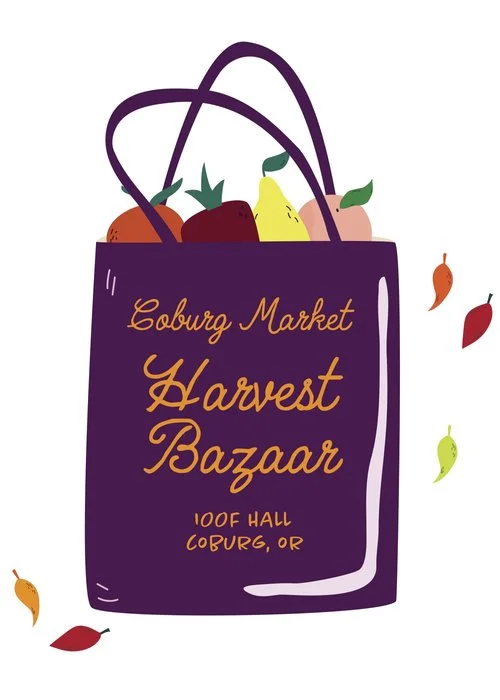

Coburg Main Street
Home
Discover
Directory
Join
Discover Coburg Events

Coburg Market Harvest Bazaar!
2024 dates are still to be scheduled.
When: TBD
Location: IOOF Hall
/harvest-bazaar
Join us every week at Coburg I00F Hall for an exciting showcase of talent and creativity at the Coburg Market Harvest Bazaar. This beloved event is a haven for local artisans and creators, where they gather to display their exceptional craftsmanship and share their unique creations with the community. Step into a world of artistic wonders as you peruse the diverse range of crafts, home textiles, artwork, paper crafts, and so much more. From intricate hand-woven textiles that add warmth and charm to your home, to stunning paintings that captivate your senses, you'll find treasures for every taste and style. The Coburg Market Harvest Bazaar is not just a place to purchase beautiful items, it's an experience that encourages you to connect with the talented individuals behind each creation. Engage in conversations with the makers, learning about the stories and inspirations that drove them to create these masterpieces. Their passion and dedication will leave you feeling inspired and connected to the local artistic community. In addition to the variety of arts and crafts available, the market also boasts a vibrant atmosphere with live music, delicious food stalls, and a sense of community that is truly enchanting. Bring your friends and family, discover new favorites, and create memories as you explore the wonders of the Coburg Market Harvest Bazaar. Don't miss out on this extraordinary event! Join us every week and celebrate the creativity and talent that thrives here in Coburg. Whether you're looking for a one-of-a-kind gift, seeking inspiration, or simply want to immerse yourself in a beautiful market experience, the Coburg Market Harvest Bazaar is the place to be.
 Coburg Main Street
Coburg Main Street